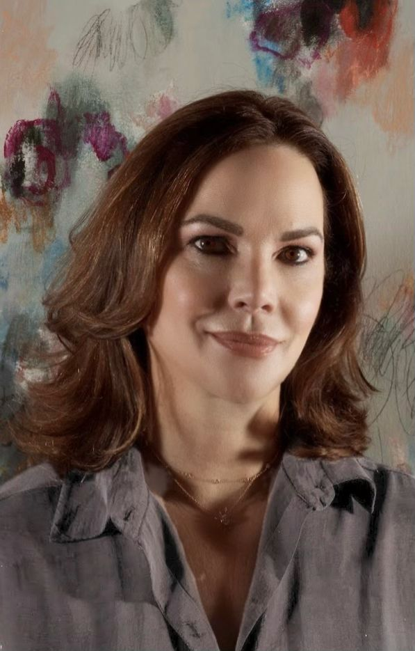
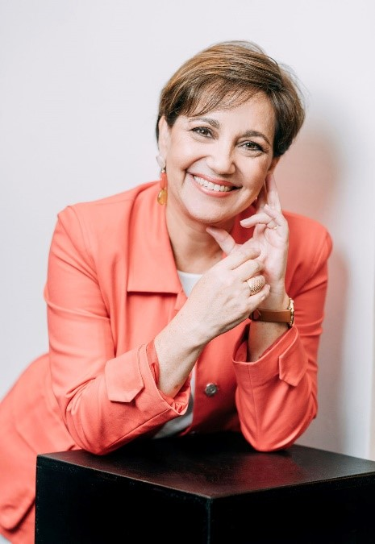

|  |
"I am enthralled by the spontaneous and lyrical interplay of paint, layers, texture and movement on the canvas. My abstract work is based on a purely intuitive process that is expressed through the use of a lot of color. I dig, scrape, drip, and spray paint, allowing the composition to reveal itself organically with each brush stroke and mark, achieving a myriad of palpable moods. Similar to an archaeologist digging for treasures, I find unique worlds within each painting. All my works of art embrace the accidental, however, at the end, all gestural expressions are very much intentional, carrying intensive emotion, rapture and the unrestrained." |
|  |
"I am an artist who practices plastic arts such as painting and sculpting, specialized on the sculpting of a variety of rock types. Painting and sculpting form the bridge between my essence and the stone or canvas. My work is influenced by music, nature, and movement itself, combining different textures and materials. I use colors which suggest intense emotions and combine my work with painted metals that suggest the passing of time. I direct myself to people with sensibility towards nature and its organic shapes; people who imagine beyond what is embodied and let themselves be guided by the rhythm and movement, either through touch or sight." |